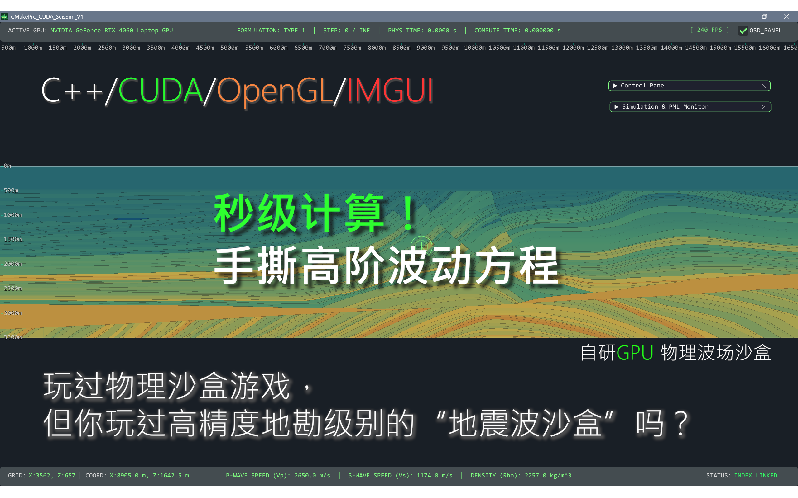
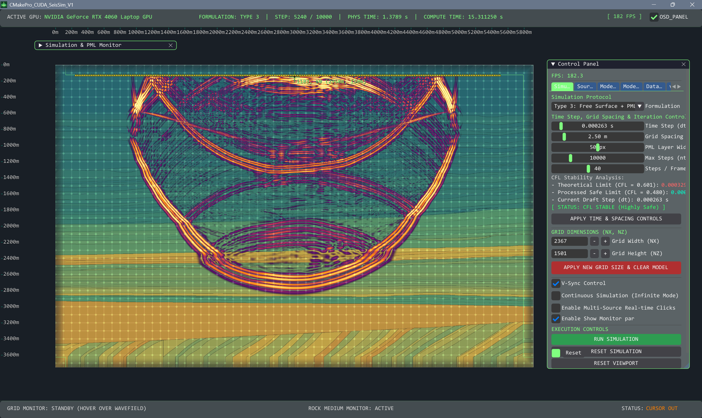
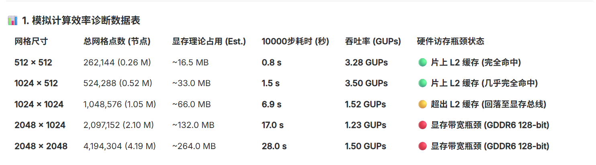

基于CUDA加速的高性能二维弹性波场模拟平台
基于CUDA加速的高性能二维弹性波场模拟平台
导言
CMakePro_CUDA_SeisSim_V1 是一款基于 C++20 标准、NVIDIA CUDA 加速技术、OpenGL 图形管线以及 Dear ImGui 交互架构开发的实时二维弹性波场数值模拟系统。该系统针对浅层地震勘探、岩石物理分析和教学演示设计，旨在提供一个物理参数可调、波场交互即时、画面高渲染品质的数值仿真“沙盒”平台。
欢迎页面

模型演示

计算效率表

通过将有限差分（FDM）算法迁移至 GPU，并深度优化显存与内存间的传输带宽，该系统在主流移动端显卡（如 RTX 4060 Laptop）上实测达到了 5.0+ GNUPs（每秒五十亿次网格点更新）的吞吐量，实现了亚秒级的万步波动方程演化。
一、 技术架构 (Technical Architecture)
本系统采用“渲染层 - 物理计算层 - 状态控制层”相互解耦的三层软件架构，确保了计算的高吞吐量与界面的高帧率交互。
1 | +-------------------------------------------------------------+ |
1. 核心计算引擎 (CUDA 求解器)
- 有限差分格式：空间采用八阶 staggered-grid（交错网格），时间采用二阶差分格式，对位移速度场（$vx, v_z$）和应力场（$\sigma{xx}, \sigma{zz}, \sigma{xz}$）进行交错时间更新。
- 物理边界条件支持：
- Type 1 (全域 PML)：整个计算域内均使用分裂场（Split-field）完美匹配层吸边界条件。
- Type 2 (混合 FDM+PML)：内域采用标准的非分裂场更新，仅在边界 PML 区域激活分裂变量，有效降低了内域的计算与访存负载。
- Type 3 (自由表面条件)：在模型顶端加载自由表面（Traction-Free Boundary: $\sigma{zz}=0, \sigma{xz}=0$），其余三边采用 PML 吸收层。
2. 极致性能优化策略
- CUDA-GL Interop（零拷贝技术）：传统的 GPU 计算渲染流程需要将显存数据拷回 CPU（Host），再上传到 OpenGL 纹理，造成严重的 PCIe 带宽瓶颈。系统通过将 OpenGL 纹理直接注册到 CUDA（
cudaGraphicsGLRegisterImage），计算出的波场颜色通过cudaMemcpy2DToArray在显卡内部直接写入纹理，实现零拷贝数据传输。 - FBO（离屏帧缓冲区）渲染管线：波场画面的长宽比例（如 $1000\times 500$）与 ImGui 视口窗口的物理像素尺寸经常不一致。系统通过离屏帧缓冲（Framebuffer Object），将着色器（Shader）处理后的波场画面以正确的宽高比渲染到离屏纹理中，再提交至 ImGui 视口，完全消除了波场在窗口中的拉伸变形与白底残留。
- 显卡端检波器值并发抽取：系统废弃了在 CPU 端拷贝整个网格提取检波器波形的方法，编写了专属的
extract_receivers_kernel提取核函数。由 GPU 内部线程并发提取少量（如 100 个）检波器位置的值写入一个小显存块，每次仅向 Host 传输几百字节的数据，传输量降低了万倍。 - 只读数据缓存与代数优化：核函数内部的只读数组采用
const float* __restrict__声明，引导编译器将 Stencil 邻域读取路由到只读数据缓存（__ldg指令）；并将有限差分公式中的高延迟除法指令（Division）全部替换为线程顶部预先算好的乘法倒数（Reciprocal），大幅度降低了硬件指令延迟。
二、 优势特点 (Key Features)
1. 顶尖的实时运算算力
在 $1000 \times 500$ 尺寸、PML 宽度为 50 格的物理模型下进行 10,000 次时间步更新，在移动端 RTX 4060 显卡上实测耗时仅为 0.995 秒。吞吐量稳定在 $5.02\text{ GNUPs}$，运算性能可以秒级处理大规模长时演化。
2. 严谨的物理稳定性保障 (CFL 检测)
在交互面板调节空间步长（$dx$）或时间步长（$dt$）时，系统会自动提取地层模型中的最大纵波速度 $V_{p, max}$，根据 2D 交错网格稳定系数公式实时计算 CFL 稳定性极限值：
并在面板上实时显示稳定性指示灯（CFL STABLE 或 DIVERGENCE RISK），在参数失稳前提前预警，避免计算溢出。
3. 符合物理现实的图形美学
- 自适应主次双钛金网格：次网格表示 1m 的物理格点（1.0 像素宽），主网格表示 5m 的标定线（1.5 像素宽，25:125 的物理比例）。通过屏幕偏导数（
fwidth）限制其像素线宽不随缩放而变形，且在拉远视图时会自动淡出次网格（消隐机制），完全消除了缩放过程中的摩尔纹（Moiré Pattern）闪烁。 - 基于 SDF 的 PML 吸收边界荧光线：通过计算 2D 矩形的有向距离场（Signed Distance Field），在数学上获得了一条全空间连续、无
if分支间断性的 PML 内部框架线，选用对比度极佳的荧光琥珀橘色（vec3(1.0, 0.45, 0.0)）。无论如何缩放、平移，该吸收边界线都能够圆润、完整且无锯齿地固定在原位。 - 霓虹发光波色重映射：系统在着色器中对 CUDA 默认输出的白底波色进行逆向实数解构，提取出每个像素的物理有向幅值，并重新映射融合到深钛金属灰（
vec3(0.012, 0.015, 0.018)）的科幻质感背景上，并叠加了微弱的扫描线与暗角，渲染效果极为精美。
4. 高精度的多源沙盒交互
- 多震源实时累加与消亡：系统打破了单一震源的限制。用户可以在“多震源模式”下，在屏幕上持续按压拖动鼠标，系统会以 $25\text{Hz}$（每 40ms 允许注入一次）的频率限制在鼠标轨迹下持续种下带有独立物理寿命的雷克子波源（Ricker Source）。这些波会在介质中互相干涉、折射，提供极佳的沙盒仿真体验。
三、 UI 布局 (UI Layout)
系统界面采用了经典的“环绕式数据监控 + 悬浮控制窗”的设计理念，将所有的操作和状态指示有机融合。
1 | +---------------------------------------------------------------------------------------------------+ |
- 顶部状态指示栏 (TopBar)：
- 左侧：实时检测并显示当前激活的 NVIDIA 硬件 GPU 型号（如 RTX 4060）。
- 中间：指示当前的物理公式模式（Type 1/2/3）、物理波演化步数（如
10000/10000）或无限模式（current_it / INF）、波场的物理传播时长（秒）以及本次模拟在显卡上花费的真实计算时长（精确到毫秒）。 - 右侧：当前界面的实时运行帧率（FPS）及控制面板的 OSD 显示总开关。
- 主视口区域 (Viewport)：
- 占据屏幕的绝大部分区域。
- 动态联动标尺：在视口的最左侧和最顶侧。当用户缩放、平移画面时，地表水平位置和纵向深度（$0\text{m}, 50\text{m}, 100\text{m}\dots$）会完美跟随画面移动，刻度标记和数字会自动在边缘滑出和滑入，且刻度间距会根据缩放率自适应切换。
- 星空科技准星：当鼠标划入视口时，原有的默认系统光标会自动隐藏，并浮现出带有雷达旋转扫描、黄青双色发光的科技准星。
- 右侧悬浮控制面板 (SEIS_LAB_CONTROLS)：
- Simulation 选项卡：管理模拟公式选择（Type 1/2/3）、单帧步进数、时间参数（$dt, nt$）控制与安全检测，以及 V-Sync（垂直同步）开关。
- Physics & Source 选项卡：管理当前激发源的三维网格位置坐标、受力角度，以及地层的纵向/横向波速（$V_p, V_s$）与密度（$\rho$），并内嵌了雷克子波形的实时动态预览图（示波器风格，黑底绿线）。
- vis 选项卡：管理波场的图像增益倍数（Color Gain）、波场分量选择（Vz/Vx）以及三套极为精美的渲染风格选择（发光熔岩、3D 釉面凹凸、荧光双极红蓝）。
- 底部固定控制区：管理模拟演化动作（RUN/PAUSE、RESET）、视口一键吸附对齐（RESET VIEWPORT，一键对齐至 TopBar 下方的 $0\text{m}, 0\text{m}$ 位置）以及全局 UI 荧光主题色的滑动选择器。
- 底部物理监测条 (BottomBar)：
- 左侧：实时监测鼠标当前悬停的网格单元行列号（$X, Z$），并折算为当前的地下物理坐标位置（单位：米）。
- 中间：实时提取当前悬停点地层下的物理参数：纵波速度 $V_p$、横波速度 $V_s$ 以及密度。
- 右侧：状态连接指示，反馈鼠标指针是否落入有效波场范围内。
四、 操作说明 (Operating Instructions)
- 基本运行与视角变换：
- 点击控制面板底部的
RUN SIMULATION开始进行物理演化，再次点击可暂停。 - 鼠标滚轮：在视口区域上下滑动可以对波场、标尺进行高精度的中心无极缩放。
- 鼠标中键拖拽：按住鼠标中键并移动鼠标，可以平移波场视角，标尺和刻度将完美跟手滑动。
- 点击
RESET VIEWPORT（或按R键），视角和标尺会自动校准，瞬间一键吸附并贴合到屏幕左上角。
- 点击控制面板底部的
- 物理参数与公式调节：
- 在
Simulation中，您可以通过下拉菜单将公式切换到Type 3: Free Surface。切换后，顶部的 PML 边界线会自动消隐，顶部蜕变为反射地表，模拟出面波（Rayleigh Wave）在表面传播的真实物理现象。 - 在
Physics & Source中调节纵横波波速（例如将 $V_p$ 设定为 $3000\text{ m/s}$），点击APPLY PHYSICAL MEDIUM，物理介质被立刻刷新。 - 调节
Time Step (dt)。如果拖动过大导致红色指示灯亮起（DIVERGENCE RISK），表明超出了该速度下的 CFL 极限。请在红灯亮起时调小dt，点击APPLY TIME CONTROLS，重置并应用安全参数。
- 在
- 多源沙盒与单点激发交互：
- 单点模式：在
Physics & Source选项卡中配置好位置后，点击TRIGGER SINGLE SOURCE SHOT（或按C键），物理场一键归零并开始重新演化。 - 多点实时模式：在控制面板中勾选
Enable Multi-Source Real-time Clicks。此时，您可以在黑色渲染背景的任意位置按住鼠标左键并拖拽涂画，一连串圆润的涟漪波前会在您指尖后方呈等间距优美释放，互相碰撞、干涉。
- 单点模式：在
- 键盘快捷键清单：
Space（空格键）：一键切换模拟的运行（RUN）与暂停（PAUSE）。C键：一键清空并重置物理演化场至第 0 步。R键：一键重置标尺和视口对齐至左上角。Tab键：在启动欢迎页（Intro）和波场模拟屏（SeisSim）之间进行平滑的屏幕路由切换。
五、 应用前景 (Application Prospects)
1. 高等地球物理教学与科学演示
在大学的《地震学》、《地震勘探原理》或《计算地球物理学》课程中，传统的公式推导极其晦涩。使用本系统，教师可以在课堂上进行实时的可视化演示：
- 面波演化演示：一键切换到 Type 3 自由表面，学生能直观看到纵波（P）、横波（S）以及沿表面传播、能量不衰减的面波（Rayleigh 波）的剥离与形成过程。
- 频散现象对照：通过拖拽
Peak Freq滑块到 $150\text{Hz}$ 和 $15\text{Hz}$，现场给学生演示网格空间步长与物理波长的空间采样关系，展示数值频散的起因与消除。 - 透射、折射与干涉：通过手画高低波速障壁（或直接加载复杂的 SEGY 速度模型），演示地震波遇到岩层界面时的反射、折射、透射以及多源干扰衍射现象。
2. 现场近地表工程物探预览 (Field Quicklook)
在浅层物探、城市地下管网探测或路基工程检测等野外现场：
- 物探工程师可以使用本系统在笔记本电脑（如搭载移动端 RTX 4060）上，根据实地打眼位置（激发点）和检波器铺设参数，进行秒级的现场数值模拟预演。
- 通过快速输入实地可能存在的异常体（如空洞、岩溶、管线、坚硬基岩）的速度与深度，实时合成并对比检波器的单道波形，辅助工程师进行现场解释、异常判别或设计最佳的震源激发与采集排列方案。
3. 科研与小样本数据增强 (Data Augmentation)
- 轻量化科研原型验证：地球物理学者在开发新型吸收边界条件、有限差分高阶算子或震源激发公式时，不需要直接编写庞大晦涩的商业软件插件。在本系统轻量化、高解耦的
Cuda_Check.cu中可以直接快速重写核函数，并在可视化窗口中毫秒级、无延迟地验证其数学物理收敛情况。 - 深度学习训练集合成：当前基于神经网络的地震层析成像（Tomography）和全波形反演（FWI）对小样本合成记录需求极大。本求解器达到 $5.0+\text{ GNUPs}$ 的速度，可在后台通过批处理脚本在数分钟内自动合成并导出数万张不同异常体模型对应的 SEGY 地震道记录，为人工智能训练提供海量、高保真的高能训练样本。